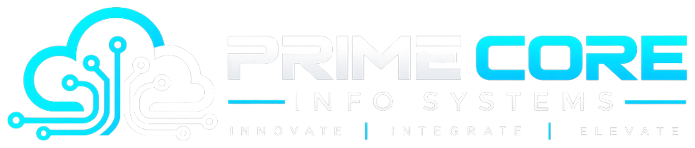

Infrastructure Reliability
Managing AWS data centre infrastructure to maintain high system reliability, security, and consistent application delivery.

PRIMECORE INFO SYSTEMSClient Case Study / AWS Cloud Infrastructure
AWS Infrastructure, FinOps, Disaster Recovery & Monitoring
StarNext Innovations Pvt. Ltd. is an enterprise technology client leveraging AWS cloud infrastructure to support business-critical applications, reliable operations, and scalable IT services.
01 — Client Overview
StarNext Innovations Pvt. Ltd. is an enterprise technology client leveraging AWS cloud infrastructure to support business-critical applications, reliable operations, and scalable IT services.
Supporting business-critical applications with dependable, high-availability architecture.
Scalable cloud environments tailored for operational reliability and performance.
Continuous operational support engineered for business agility and sustained resilience.
02 — The Challenges
Managing AWS data centre infrastructure required continuous monitoring, cost optimization, effective disaster recovery planning, and improved operational visibility. The objective was to optimize cloud spending while maintaining infrastructure reliability, security, and business continuity.
Managing AWS data centre infrastructure to maintain high system reliability, security, and consistent application delivery.
Analyzing and optimizing cloud resource utilization to curb unwarranted spend while preserving performance.
Establishing effective disaster recovery readiness, connectivity protocols, and recovery initiatives to safeguard business continuity.
Overcoming operational blind spots through continuous monitoring and real-time detection of infrastructure issues.
03 — Implementation Solution
Primecore Infosystems supported StarNext Innovations through four key initiatives:
Infrastructure management, configuration, deployment, and operational support for AWS environments.
Analysis and optimization of cloud resource utilization to improve cost efficiency.
DR planning, infrastructure readiness, connectivity, and recovery initiatives to strengthen business continuity.
Infrastructure monitoring, performance visibility, and operational issue detection to support reliable services.
04 — Business Outcome
The engagement focused on improving AWS infrastructure reliability, optimizing cloud expenditure, strengthening disaster recovery preparedness, and enhancing monitoring capabilities.
Through these initiatives, Primecore Infosystems supports StarNext Innovations in building a more cost-efficient, observable, and resilient cloud infrastructure environment.
Get Started
Primecore Info Systems helps businesses design, migrate, automate and optimize their IT infrastructure across AWS, Microsoft Azure and hybrid cloud environments.